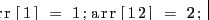

Contract programming
The contract programming is a technique, in which the developer states specific requirements for software components. A software component can be function or a module. Contracts define rules on how a component should be used. The contracts contain prerequisites before using the component and define outcomes after using component. A component user has to satisfy all the prerequisites of component being used and agree on possible outcomes, to use the component. For instance contracts of function  can have precondition and postcondition . Contracts of function are satisfied if the function is invoked in state satisfying and either does not terminate, or in final state of executing , the post-condition holds. These contracts help developers to write code under a safety net and components with contracts tend to be less error prone. [30]
Figure 2.2:
An example of contract programming
|
In the example fig:example:contract:programming, precondition checks if the pointer is a NULL pointer and post condition checks if the memory address reaches its max value.
ash
2012-09-13